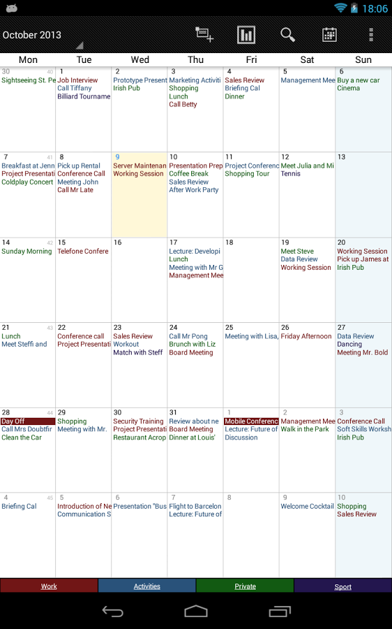
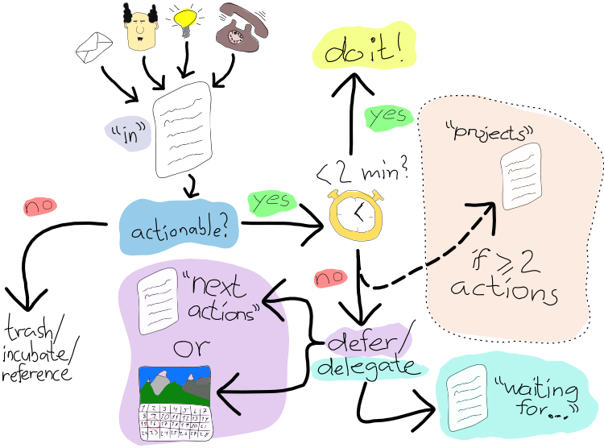

Time, Workflow, and Getting Things Done
Z. Cliffe Schreuders


This content and code (including slides CSS, HTML, and JS) by Z. Cliffe Schreuders is dual licensed under a Creative Commons Attribution-ShareAlike v4.0 International License and GNU Affero General Public License v3.
Lecture recordings are published on the VLE and YouTube.
Image Monkey by samuelrodgers752.
Slides created using AwesomeSlides converter by Z. Cliffe Schreuders
Caution
- This “lecture” is full of subjectivity
- Try things out, take what works for you, and discard what doesn't
What this is all about
- Not about project management
- Nothing about Gantt Charts and Work Breakdown Structures
- This is about your own personal everyday work patterns and how you use your time and manage your commitments
- To do so more effectively
You have a monkey brain
- Evolution has made us both very clever and very stupid
- Some things will be boring
- Some tasks will be engaging
- You do not always work effectively
- You forget things
- You spend time trying to remember things, such as dates and meetings
Image Monkey by samuelrodgers752
Tip - Don't try to keep dates in your head!
- Tip: Don't try to keep dates in your head!
- Need to be at a lecture every Monday at 9am?
- Put it in your (digital) calendar
- Set an alarm every Monday morning
Action
- Do you have a digital calendar?
- If not, set one up on your smart phone! Now!
You have the brain of a monkey
- You tend to put off doing things
Image Innocent eyes by Pai Shih
Tip - The 2 minute rule
- Tip: If it will take two minutes or less, do it on the spot, the moment the task is defined
Monkey brain
- Your other commitments are on your mind even when they are not relevant
- When do you “naturally” remember that you need to buy a new battery? Many times, just not when you need to remember: when you are at the shops!
Image The Gesture ... by jinterwas
Tip - Write lists
- When you are working on something, write a list of all the things you need to do
- Tick them off as you do them
Actionable lists
- Every list item should be actionable: a clear thing you can do
You have a brain, like a monkey
- Certain times of the day that you really can't do certain kinds of work well?
Image Grivet Monkey, Ethiopia by Rod Waddington
Tip - Figure yourself out
- Identify what you can do at those times when you are not being productive
- Easy things?
- Do you only work well to dead lines? Set yourself some.
The Pomodoro Technique

- Set a timer for 25 minutes
- Work on your task until timer goes off (without being distracted)
- Take a short break
- Record pomodoro as complete
- Many apps are available
Brain=Monkey
- You spend your time based on the here and now rather than your higher priorities
Image Monkey by samuelrodgers752
Tip - Divide your time based on your priorities and obligations
- You have 3 modules, of equal importance, make sure you are spending your time appropriately
- Reflect on what is important to you
You have a monkey's brain
- You are easily distracted
Image Can you keep a secret? by jinterwas
Tip - Protect your time
- Tip: Protect your time by isolation
- You may not have 100% control of your environment, but you do have some
- What inputs are you accepting? (Facebook, IM, news, email etc?) – are they critical for what you are trying to achieve? How often do you need to check these?
- Learn to say no
Getting Things Done (GTD)
- A methodology for running your life
- A system for collecting and tracking all your tasks, ideas, and projects
- Designed to stop you from worrying about all the things you could or should be doing
- Defines a basic workflow to manage all your obligations
Tip - Don't try to keep anything in your head
- Tip: Don't try to keep ANYTHING in your head, other than knowledge!
- Track EVERYTHING in external systems
- Mind like water
Inbox
- The moment you think of something that needs doing (or that you could do), write it down
- Have an inbox where you dump these things, and review every so often (at least a few times a week)
GTD workflow
Next actions
- For every task:
- Define desired outcomes
- Next actions
Projects and next action lists
- Every project you are working on should have a list of next actions
Contexts and reminders
- Have your next actions organised based on specific context (at home, in the office, email, at the shops, etc)
- Set reminders and dates so that things are brought to your attention when they are needed
Weekly reviews
- Honestly making time for this can be the hardest part
- Once a week, schedule a few hours to make sure your system/lists are up to date
- Tasks have been checked off
- New tasks have been added
- Set reminders, dates etc
- Process your inbox to zero
- Reflect on your aims vs trajectory
Areas of focus
- List your medium and long term goals
- Periodically (weekly or monthly) assess these
- Do they line up with your trajectory?
My system
- Based on GTD
- Next actions assigned to the days to start trying to do the task, pushed back days if not completed
- The result is a daily task list
TODO/GTD software
- Todoist (Web, Android, etc)
- Omnifocus (Apple devices)
- Many many others
Drink coffee
- Coffee naps?
Image Cup of coffee by Infomastern
Sleep and rest
- Remember, you also need some down time
Activity
- Install some TODO list software, or grab a notebook
- List every project you are working on
- No matter how small – a project is anything with multiple steps involved
- Write down every single thing you have to do:
- Around the home, uni studies, your health, family, work, etc
- NEXT ACTIONS for each
Activity
- When you get home work on this list some more (try not to freak out at how many things there are a few hundred is not unusual)
- Later you can process your inbox...
- Decide how you are going to allocate time to your commitments
- Then, when you are working, use your lists
Conclusion
- You have a monkey brain
- Offload from your brain into external systems
Image Monkey by samuelrodgers752